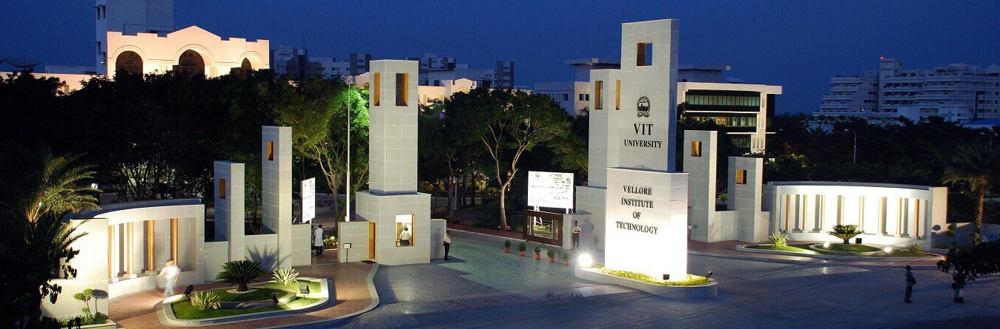

ABOUT VIT
VIT's each endeavor has been finished by the administration and other authoritative sheets to guarantee that each understudy discovers VIT an enthusiastic, fun and clever network to utilize their intellectual years. Aware of the impact these dynamic years can have on the brains of the desire for our country and the globe, VIT tries to advance, present and extend any dares to shape their psyches. By bringing clubs, parts and school celebrations, understudies are not just uncovered to a serious situation inside the college yet additionally with presumed colleges and universities in and around the nation.
VIT was built up with the point of furnishing quality advanced education comparable to worldwide principles. It tirelessly looks for and receives inventive strategies to improve the nature of advanced education on a steady basis.The grounds has a cosmopolitan environment with understudies from all sides of the globe. Experienced and learned educators are firmly urged to sustain the understudies. The worldwide guidelines set at VIT in the field of educating and exploration spike us on in our persistent quest for greatness. Truth be told, it has become a lifestyle for us. The profoundly energetic adolescents on the grounds are a consistent wellspring of pride. Our Memoranda of Understanding with different worldwide colleges are our significant quality. They accommodate a trade of understudies and workforce and energize joint exploration ventures for the shared advantage of these colleges. Huge numbers of our understudies, who seek after their examination ventures in outside colleges, carry high caliber to their work and regard to India and have done us pleased. With consistent advances, we proceed with our walk forward. We anticipate meeting you here at VIT.

School of Computer Science and Engineering (SCOPE)
The crucial the School is to endeavor perseveringly for accomplishing greatness in figuring disciplines. It is being sought after through its range of scholastic projects in registering of contemporary norms. The fundamental point is to deliver processing graduates with potential, to plan and create frameworks including the incorporation of programming and equipment gadgets, utilize inventive methodologies in programming and critical thinking and tackling issues, make Large Scale Software Systems and fabricate information/figuring foundation for an association.
History of figuring discipline at VIT goes back to 1993, when the Department of Computer Science and Engineering was set up to fulfill the need for all around qualified PC experts. The School of Computer Science and Engineering (SCOPE) was imagined in the year 2009.
At present, the School headed by Dr. Saravanan R, has in excess of 7000 understudies and 158 center employees separated from many visiting educators, recognized experts from industry, prominent scientists and instructing/research aides. With a mean to cut a specialty for itself in Computer Science and united spaces, the School endeavors to turn into a spearheading world-class focus of greatness in training and examination through collective, consultative and participatory methodologies